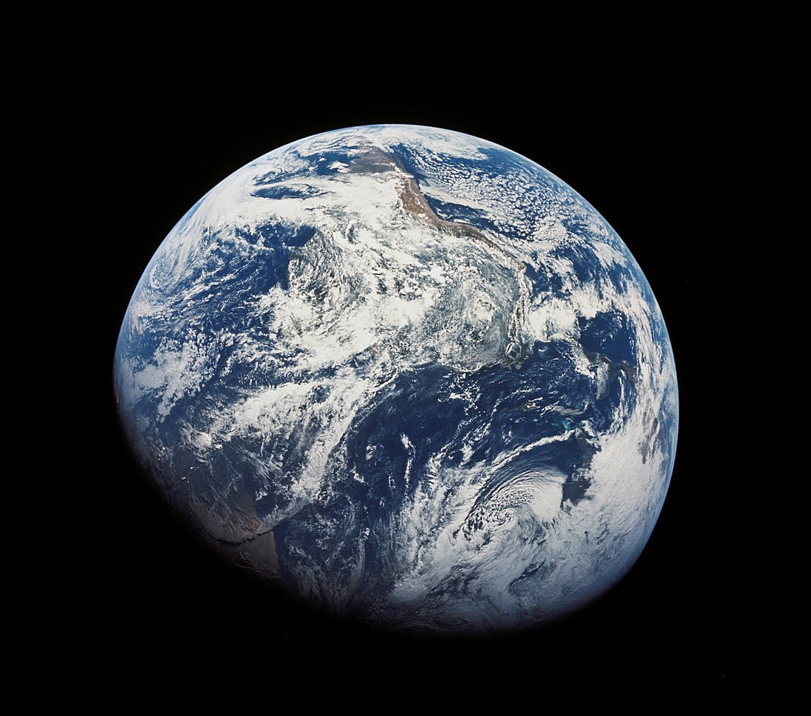
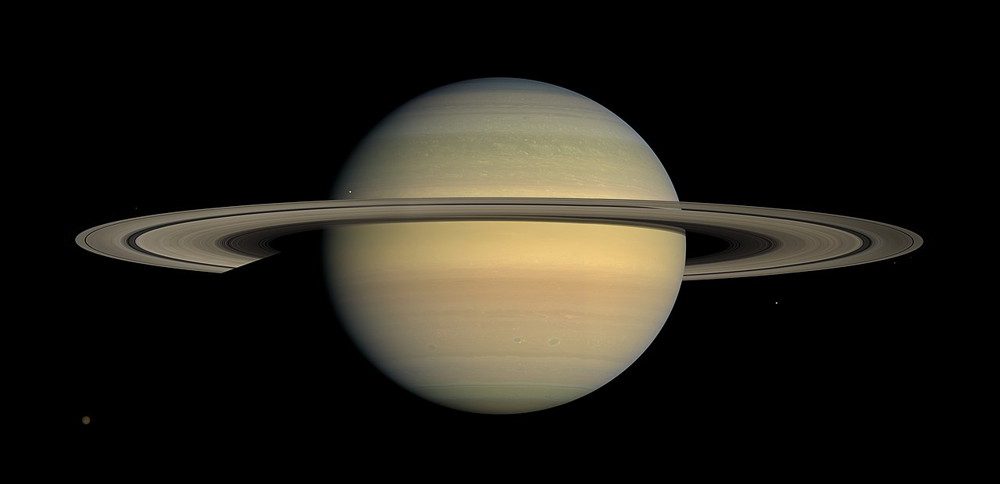

El sistema solar es el sistema planetario que liga gravitacionalmente a un conjunto de objetos astronómicos que giran directa o indirectamente en una órbita alrededor de una única estrella conocida con el nombre de Sol.

Planetas
Mercurio
Mercurio es el planeta del sistema solar más cercano al Sol y el más pequeño. Forma parte de los denominados planetas interiores y carece de satélites naturales al igual que Venus. Se conocía muy poco sobre su superficie hasta que fue enviada la sonda planetaria Mariner 10 y se hicieron observaciones con radar y radiotelescopios.
Venus
Venus es el segundo planeta del sistema solar en orden de proximidad al Sol y el tercero más pequeño después de Mercurio y Marte. Al igual que Mercurio, carece de satélites naturales.
Tierra
La Tierra es un planeta del sistema solar que gira alrededor de su estrella, el Sol, en la tercera órbita más interna. Es el más denso y el quinto mayor de los ocho planetas del sistema solar. También es el mayor de los cuatro terrestres o rocosos.
Marte
Marte es el cuarto planeta en orden de distancia al Sol y el segundo más pequeño del sistema solar, después de Mercurio. También es conocido como el planeta rojo debido a la apariencia rojiza que le confiere el óxido de hierro predominante en su superficie.
Júpiter
Júpiter es el planeta más grande del sistema solar y el quinto en orden de lejanía al Sol. Es un gigante gaseoso que forma parte de los denominados planetas exteriores.
Saturno
Saturno es el sexto planeta del sistema solar contando desde el Sol, el segundo en tamaño y masa después de Júpiter y el único con un sistema de anillos visible desde la Tierra. Forma parte de los denominados planetas exteriores o gaseosos.
Urano
Urano es el séptimo planeta del sistema solar, el tercero de mayor tamaño, y el cuarto más masivo.
Neptuno

Neptuno es el octavo planeta en distancia respecto al Sol y el más lejano del sistema solar. Forma parte de los denominados planetas exteriores, y dentro de estos, es uno de los gigantes helados, y es el primero que fue descubierto gracias a predicciones matemáticas.
Plutón

Plutón se encuentra situado a continuación de la órbita de Neptuno. El 24 de agosto de 2006, la Unión Astronómica Internacional (UAI) excluyó a Plutón como planeta del sistema solar, y lo clasificó como planeta enano.